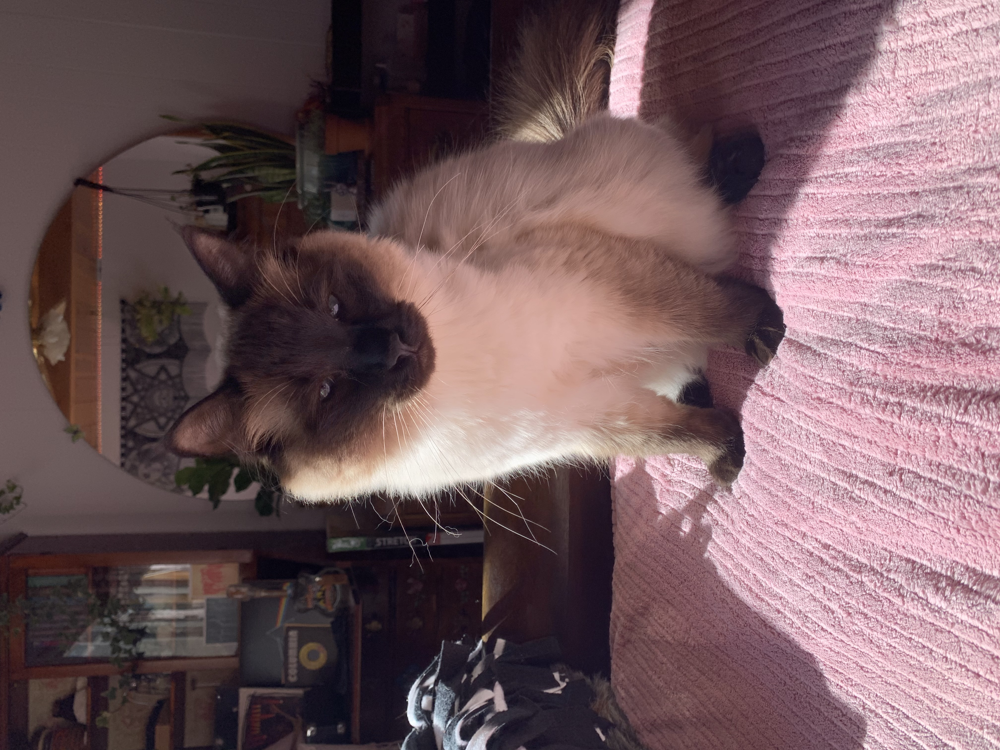
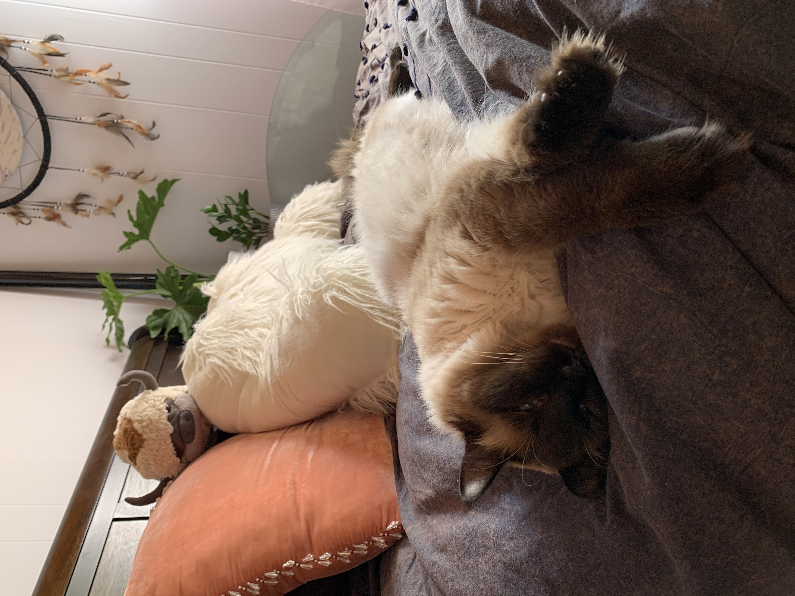
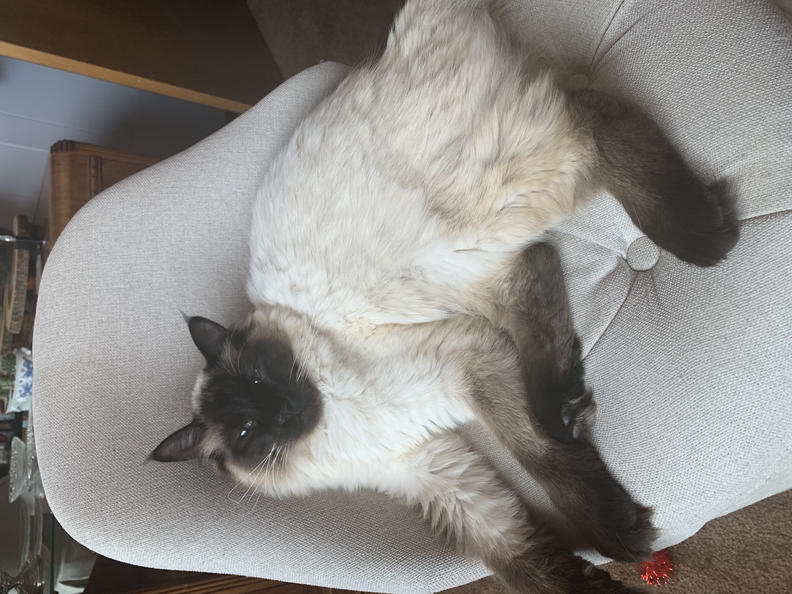

The objective of this lab was to get even more experience creating an HTML, as well as practice inserting multiple images and adding links to them.
While completing this lab, I realized how much easier it was to complete than previous labs. Because of this practice I found mistakes much more quickly and with less stress. The only complication I came across while completing the lab was that I was missing the "< / a >" after the images that links. It was turning my next paragraph tag into a link as well, but I found the solution with ease.
What you are seeing is an index.html that I wrote the code for. Below are images of my cat, Appa, with links to different cat resues in the Monterey Bay area.
  Here are some links to my favorite kitty Instagram accounts I follow.